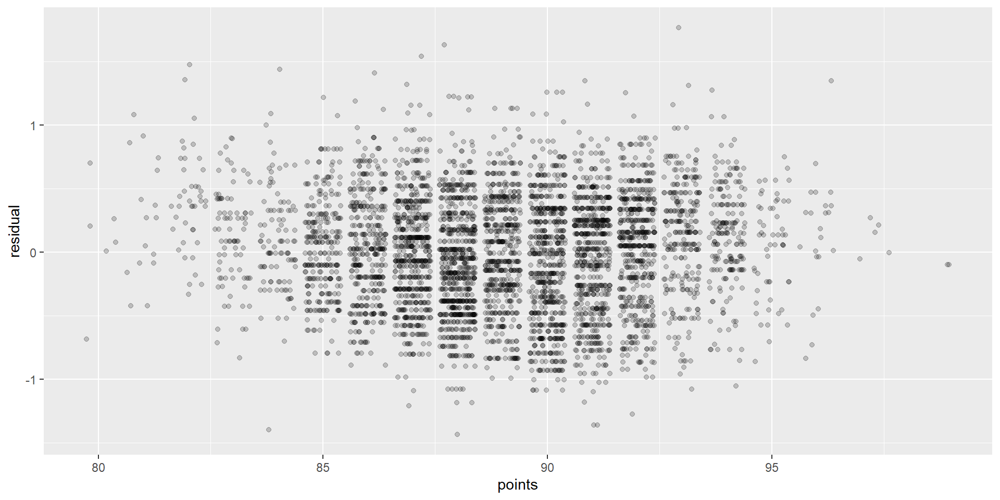
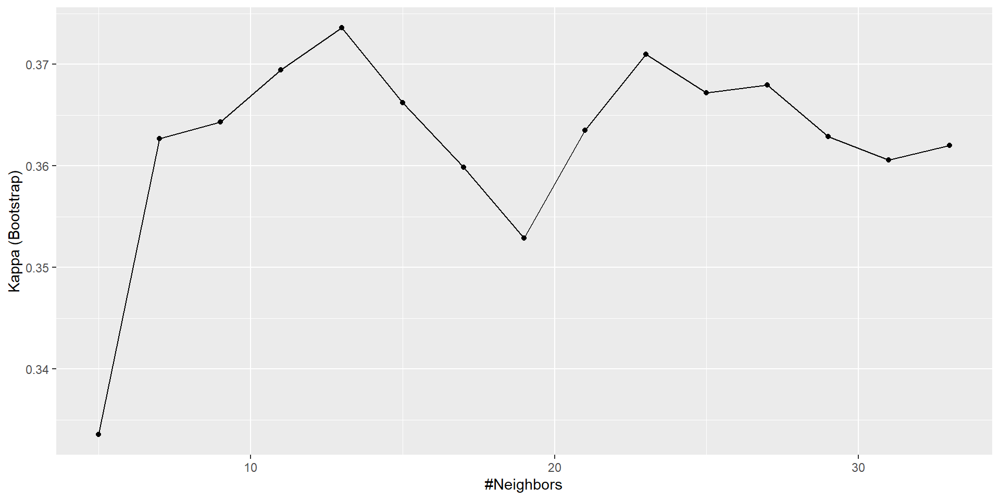

\(K\) Nearest Neighbors
Applied Machine Learning
Agenda
- Review of Homeworks
- A human understanding of regression
- Dinner break
- Preprocessing and BoxCox
- The \(K\)NN algorithm and the Confusion Matrix
Homework
HW1
- We need to work on writing quality.
- We need to work on RMSE intepretation.
- We need to work on using
summaryresponsibly. - We need to work on applying lecture topics to leading questions.
- We would benefit from use of the
embed-resourcesoption in Quarto.
HW1 Sols Posted
HW2
- Think
- Pair
- Share
Today
Setup
Reporting Impact from Regressions
Correlation
http://guessthecorrelation.com/ …my high score is 72 (Jameson 122)

Calculating correlation
Exercise
- Calculate the correlation between \(\log\)(price) and points…
- …by variety…
- …for Oregon Chardonnay, Pinot Noir and Pinot Gris…
- …in the same tibble!
Solution
Visualizing these different correlations
Visualizing these different correlations

Graphing residuals (bad)
Annotate
Graphing residuals (good)
Interpreting the coefficients
model <- lm(lprice~points, filter(wine,province=="Oregon"))
pct = (exp(coef(model)["points"]) - 1) * 100
c(coef(model)["points"],pct) points points
0.09396111 9.85170227 - We logged the dependent variable (price)
- A 1 point ratings increase =
9.85% - That is, a percent change in rating to an absolute change in the dependent variable.
- A 1 point ratings increase =
- \((e^x - 1)*100\)
Interpreting the coefficients
m_yr <- lm(lprice~year, filter(wine,province=="Oregon"))
yr = (exp(coef(m_yr)["year"]) - 1) * 100
c(coef(m_yr)["year"],yr) year year
0.01895092 1.91316309 - This is a de facto measure of inflation.
Some Examples
Pretty Print
for(v in c("Chardonnay", "Pinot Gris","Pinot Noir")){
m <- lm(lprice~points, filter(wine,province=="Oregon", variety==v))
pct <- round((exp(coef(m)["points"]) - 1) * 100,2)
print(str_c("For ",v,", a 1 point ratings increase leads to a ",pct,"% increase in price."))
}[1] "For Chardonnay, a 1 point ratings increase leads to a 11.34% increase in price."
[1] "For Pinot Gris, a 1 point ratings increase leads to a 5.46% increase in price."
[1] "For Pinot Noir, a 1 point ratings increase leads to a 10.27% increase in price."\(\log\) feature
Call:
lm(formula = price ~ lpoints, data = filter(wine, province ==
"Oregon") %>% mutate(lpoints = log(points)))
Coefficients:
(Intercept) lpoints
-1419.0 324.4 - What does the sign (positive or negative) tell us?
- Was \(\log\) appropriate here?
Percentages
- Since we logged the IV (feature), a 1% ratings increase is a ~3.24 increase in price on average.
- What are the units on that?
Note: \[ x/100 \]
LogLog (also elasticity)
Call:
lm(formula = lprice ~ lpoints, data = filter(wine, province ==
"Oregon") %>% mutate(lpoints = log(points)))
Coefficients:
(Intercept) lpoints
-33.770 8.298 …a 1% increase in ratings equals a 8.3% increase in price on average
Summary
- Only the dependent/response variable is log-transformed.
- Exponentiate the coefficient.
- Subtract one from this number
- Multiply by 100.
- This gives the percent increase (or decrease).
Units
- Change is per one-unit increase in the independent variable.
- Here, independent is points.
- Dependent is price.
Example
- For every 1% increase in the independent variable…
- Basically, one point
- Our dependent variable increases by about 8.3%.
- A $30 bottle of wine scoring 90 would be worth $32.50 as a 91.
Graphing points by variety

Summary
(tmp <- wine %>%
filter(province=="Oregon") %>%
filter(variety %in% c("Chardonnay","Pinot Noir","Pinot Gris")) %>%
group_by(variety) %>%
summarise(mean=mean(points)))# A tibble: 3 × 2
variety mean
<chr> <dbl>
1 Chardonnay 89.7
2 Pinot Gris 88.5
3 Pinot Noir 89.5- What are the percentage differences here?
Regression
model <- lm(points~variety,
filter(wine,province=="Oregon",variety %in% c("Chardonnay","Pinot Noir","Pinot Gris")))
get_regression_table(model)# A tibble: 3 × 7
term estimate std_error statistic p_value lower_ci upper_ci
<chr> <dbl> <dbl> <dbl> <dbl> <dbl> <dbl>
1 intercept 89.7 0.122 737. 0 89.5 90.0
2 variety: Pinot Gris -1.24 0.177 -7.03 0 -1.59 -0.894
3 variety: Pinot Noir -0.256 0.132 -1.94 0.053 -0.515 0.003- What types of variables are we considering here?
Assumptions of linear regression
- Linearity of relationship between variables
- Independence of the residuals
- Normality of the residuals
- Equality of variance of the residuals
Linearity of relationship

What would the residuals look like?
Independence
Given our original model of \[ \log(\text{price})=m*\text{Points}+b \]
are there any problems with independence?
How could we check?
Normality
Equality of variance
No equality in the variance
Credit: Modern Dive (click)

Dinner

Preprocessing and BoxCox
Setup
- Pivot to pinot.
- Say “\(\pi^0\)”
Preprocessing
- Box-Cox transformations use maximum likelihood estimate to estimate value for \(\lambda\)
\[ y(\lambda) = \frac{x^{\lambda}-1}{\lambda} \]
- The goal is to make data seem more like a normal distribution.
in R
- LaTeX
\[ y(\lambda) = \frac{x^{\lambda}-1}{\lambda} \]
- R
Examples
- When \(\lambda=1\), there is no transformation
\[ y(1) = \frac{x^{\lambda}-1}{\lambda} = \frac{x^{1}-1}{1} = x-1 \approx x \]
\[ f = y(-1) \implies f(x) \approx x \]
Examples
- When \(\lambda=0\), it is log transformed
\[ y(0) = \frac{x^{\lambda}-1}{\lambda} = \frac{x^{0}-1}{0} \]
\[ f = y(0) \implies f(x) \approx \log(x) \]
- Zero is a special case, but using a little thing called “calculus” this sorta makes sense.
- Basically, negative infinity at 0, then increase slowly once positive.
\(\lambda = 0\)
for (x in 1:3) {
print(x/10)
for (l in 3:1) {
f = y(l/100)
print(c(l/100, x/10, f(x/10), log(x/10), f(x/10) - log(x/10)))
}
}[1] 0.1
[1] 0.03000000 0.10000000 -2.22485664 -2.30258509 0.07772845
[1] 0.02000000 0.10000000 -2.25037070 -2.30258509 0.05221439
[1] 0.01000000 0.10000000 -2.27627790 -2.30258509 0.02630719
[1] 0.2
[1] 0.0300000 0.2000000 -1.5712014 -1.6094379 0.0382365
[1] 0.0200000 0.2000000 -1.5838107 -1.6094379 0.0256272
[1] 0.01000000 0.20000000 -1.59655566 -1.60943791 0.01288225
[1] 0.3
[1] 0.03000000 0.30000000 -1.18248898 -1.20397280 0.02148382
[1] 0.02000000 0.30000000 -1.18959295 -1.20397280 0.01437985
[1] 0.010000000 0.300000000 -1.196754051 -1.203972804 0.007218753Examples
\[ y(1) = \frac{x^{\lambda}-1}{\lambda} = \frac{x^{.5}-1}{.5} = 2\times(\sqrt{x}-1) \approx \sqrt{x} \]
\[ f = y(.5) \implies f(x) \approx \sqrt{x} \]
Examples
- When \(\lambda=-1\), it is an inverse
\[ y(1) = \frac{x^{\lambda}-1}{\lambda} = \frac{x^{-1}-1}{-1} = \frac{x^{-1}}{-1}+\frac{-1}{-1} = \frac{1}{-x}-1 = -x \] \[ f = y(.5) \implies f(x) \approx -x \]
Just use the function
- R: envstats
Just use the function
- Py: scipy.stats
On Python
- I like the Python boxcox documentation:
Caret preprocessing is so easy!
wine %>%
preProcess(method = c("BoxCox","center","scale")) %>%
predict(wine) %>%
select(-description) %>%
head() province price points year taster_name
1 Oregon 0.7146905 -1.033841 -0.03425331 Paul Gregutt
2 Oregon -1.4139991 -1.033841 0.33313680 Paul Gregutt
3 California 0.8225454 -1.033841 -0.40146088 Virginie Boone
4 Oregon 0.2408520 -1.367723 -0.76848588 Paul Gregutt
5 Oregon -1.2418658 -1.367723 -1.13532834 Paul Gregutt
6 Oregon -1.0109945 -1.367723 1.06846470 Paul GreguttOr is it?
But wait… what is wrong here?
wino <- wine %>%
mutate(year_f = as.factor(year))
wino <- wino %>%
preProcess(method = c("BoxCox","center","scale")) %>%
predict(wino)
head(wino %>% select(starts_with("year"))) year year_f
1 -0.03425331 2012
2 0.33313680 2013
3 -0.40146088 2011
4 -0.76848588 2010
5 -1.13532834 2009
6 1.06846470 2015- Are years normally distributed?
The \(K\)NN Algorithm
Algorithm
- Load the data
- Initialize \(K\) to your chosen number of neighbors
- For each example in the data
- Calculate the distance between the query example and the current example from the data.
- Add the distance and the index of the example to an ordered collection
- Sort the ordered collection of distances and indices from smallest to largest (in ascending order) by the distances
- Pick the first \(K\) entries from the sorted collection
- Get the labels of the selected \(K\) entries
- If regression, return the mean of the \(K\) labels
- If classification, return the mode of the \(K\) labels
Basis
- We assume:
- Existing datapoints in something we think of as a space
- That is, probably two numerical value per point in a coordinate plane
- Categorical is fine - think a Punnett square
- Existing datapoints are labelled
- Numerical or categorical still fine!
- Existing datapoints in something we think of as a space
- To visualize, we will have a 2d space with color labels.
Let’s draw it

Let’s draw it 2

Let’s draw it 3
.png)
Engineering some features
- Create an “other” for most tasters.
Engineering some features
- Create dummys for years, tasters
Engineering some features
- Convert everything to snake case.
Engineering some features
- Add indicators for 3 tasting notes.
Engineering some features
- Let’s see it
province price points year year_f_1996 year_f_1997
1 Oregon 0.7146905 -1.033841 -0.03425331 0 0
2 Oregon -1.4139991 -1.033841 0.33313680 0 0
3 California 0.8225454 -1.033841 -0.40146088 0 0
4 Oregon 0.2408520 -1.367723 -0.76848588 0 0
5 Oregon -1.2418658 -1.367723 -1.13532834 0 0
6 Oregon -1.0109945 -1.367723 1.06846470 0 0Split
Simple model
- Specify a \(K\)NN model.
Confusion matrix
- Let’s look at Kappa.
Kappa \(\kappa\) statistic
Kappa statistic is a measurement of the agreement for categorical items Kappa can be used to assess the performance of kNN algorithm.
\[ \kappa = \dfrac{P(A)-P(E)}{1 - P(E)} \] > where \(P(A\))$ is the relative observed agreement among raters, and \(P(E)\) is the proportion of agreement expected between the classifier and the ground truth by chance. src
Kappa \(\kappa\) statistic
Compares observed accuracy against what would be expected by a random classifier.
- < 0.2 (not so good)
- 0.21 - 0.4 (ok)
- 0.41 - 0.6 (pretty good)
- 0.6 - 0.8 (great)
- > 0.8 (almost perfect)
…whoa! What’s going on here?
Overfitting… or a leak?
Review the dataframe
province price points year
Length:8380 Min. :-3.31001 Min. :-3.289952 Min. :-5.8877
Class :character 1st Qu.:-0.62250 1st Qu.:-0.696100 1st Qu.:-0.4015
Mode :character Median : 0.05057 Median :-0.009039 Median : 0.3331
Mean : 0.00000 Mean : 0.000000 Mean : 0.0000
3rd Qu.: 0.57013 3rd Qu.: 0.693463 3rd Qu.: 0.7007
Max. : 7.30609 Max. : 2.893605 Max. : 1.0685
year_f_1996 year_f_1997 year_f_1998 year_f_1999
Min. :0.0000000 Min. :0.0000000 Min. :0.000000 Min. :0.000000
1st Qu.:0.0000000 1st Qu.:0.0000000 1st Qu.:0.000000 1st Qu.:0.000000
Median :0.0000000 Median :0.0000000 Median :0.000000 Median :0.000000
Mean :0.0001193 Mean :0.0002387 Mean :0.008353 Mean :0.002029
3rd Qu.:0.0000000 3rd Qu.:0.0000000 3rd Qu.:0.000000 3rd Qu.:0.000000
Max. :1.0000000 Max. :1.0000000 Max. :1.000000 Max. :1.000000
year_f_2000 year_f_2001 year_f_2002 year_f_2003
Min. :0.000000 Min. :0.000000 Min. :0.000000 Min. :0.0000000
1st Qu.:0.000000 1st Qu.:0.000000 1st Qu.:0.000000 1st Qu.:0.0000000
Median :0.000000 Median :0.000000 Median :0.000000 Median :0.0000000
Mean :0.001074 Mean :0.000358 Mean :0.000358 Mean :0.0001193
3rd Qu.:0.000000 3rd Qu.:0.000000 3rd Qu.:0.000000 3rd Qu.:0.0000000
Max. :1.000000 Max. :1.000000 Max. :1.000000 Max. :1.0000000
year_f_2004 year_f_2005 year_f_2006 year_f_2007
Min. :0.000000 Min. :0.00000 Min. :0.00000 Min. :0.00000
1st Qu.:0.000000 1st Qu.:0.00000 1st Qu.:0.00000 1st Qu.:0.00000
Median :0.000000 Median :0.00000 Median :0.00000 Median :0.00000
Mean :0.002029 Mean :0.01539 Mean :0.01957 Mean :0.01432
3rd Qu.:0.000000 3rd Qu.:0.00000 3rd Qu.:0.00000 3rd Qu.:0.00000
Max. :1.000000 Max. :1.00000 Max. :1.00000 Max. :1.00000
year_f_2008 year_f_2009 year_f_2010 year_f_2011
Min. :0.00000 Min. :0.00000 Min. :0.0000 Min. :0.00000
1st Qu.:0.00000 1st Qu.:0.00000 1st Qu.:0.0000 1st Qu.:0.00000
Median :0.00000 Median :0.00000 Median :0.0000 Median :0.00000
Mean :0.02733 Mean :0.04129 Mean :0.0599 Mean :0.06945
3rd Qu.:0.00000 3rd Qu.:0.00000 3rd Qu.:0.0000 3rd Qu.:0.00000
Max. :1.00000 Max. :1.00000 Max. :1.0000 Max. :1.00000
year_f_2012 year_f_2013 year_f_2015 taster_name_jim_gordon
Min. :0.0000 Min. :0.0000 Min. :0.00000 Min. :0.00000
1st Qu.:0.0000 1st Qu.:0.0000 1st Qu.:0.00000 1st Qu.:0.00000
Median :0.0000 Median :0.0000 Median :0.00000 Median :0.00000
Mean :0.1796 Mean :0.2171 Mean :0.09726 Mean :0.06563
3rd Qu.:0.0000 3rd Qu.:0.0000 3rd Qu.:0.00000 3rd Qu.:0.00000
Max. :1.0000 Max. :1.0000 Max. :1.00000 Max. :1.00000
taster_name_matt_kettmann taster_name_other taster_name_roger_voss
Min. :0.0000 Min. :0.00000 Min. :0.0000
1st Qu.:0.0000 1st Qu.:0.00000 1st Qu.:0.0000
Median :0.0000 Median :0.00000 Median :0.0000
Mean :0.1826 Mean :0.06993 Mean :0.1415
3rd Qu.:0.0000 3rd Qu.:0.00000 3rd Qu.:0.0000
Max. :1.0000 Max. :1.00000 Max. :1.0000
taster_name_virginie_boone cherry chocolate earth
Min. :0.0000 Mode :logical Mode :logical Mode :logical
1st Qu.:0.0000 FALSE:5017 FALSE:7830 FALSE:7030
Median :0.0000 TRUE :3363 TRUE :550 TRUE :1350
Mean :0.2223
3rd Qu.:0.0000
Max. :1.0000 Determine what dominates
Test
Fixing the leak
- Dastardly humans, always existing in a physical location.
Rerun
Confusion matrix
Confusion Matrix and Statistics
Reference
Prediction Burgundy California Casablanca_Valley Marlborough New_York
Burgundy 125 42 4 7 2
California 53 586 8 15 5
Casablanca_Valley 2 2 0 0 1
Marlborough 3 5 1 4 6
New_York 0 3 3 3 3
Oregon 55 153 10 16 9
Reference
Prediction Oregon
Burgundy 60
California 204
Casablanca_Valley 2
Marlborough 10
New_York 3
Oregon 268
Overall Statistics
Accuracy : 0.5894
95% CI : (0.5653, 0.6131)
No Information Rate : 0.4728
P-Value [Acc > NIR] : < 2.2e-16
Kappa : 0.3512
Mcnemar's Test P-Value : 0.002573
Statistics by Class:
Class: Burgundy Class: California Class: Casablanca_Valley
Sensitivity 0.52521 0.7408 0.000000
Specificity 0.91986 0.6769 0.995750
Pos Pred Value 0.52083 0.6728 0.000000
Neg Pred Value 0.92114 0.7444 0.984394
Prevalence 0.14226 0.4728 0.015541
Detection Rate 0.07472 0.3503 0.000000
Detection Prevalence 0.14345 0.5206 0.004184
Balanced Accuracy 0.72254 0.7089 0.497875
Class: Marlborough Class: New_York Class: Oregon
Sensitivity 0.088889 0.115385 0.4899
Specificity 0.984644 0.992714 0.7842
Pos Pred Value 0.137931 0.200000 0.5245
Neg Pred Value 0.975061 0.986128 0.7599
Prevalence 0.026898 0.015541 0.3270
Detection Rate 0.002391 0.001793 0.1602
Detection Prevalence 0.017334 0.008966 0.3054
Balanced Accuracy 0.536766 0.554049 0.6371With parameter tuning over \(K\)
fit <- train(province ~ .,
data = train,
method = "knn",
tuneLength = 15,
trControl = trainControl(number = 1)) # default bootstrap
fitk-Nearest Neighbors
6707 samples
25 predictor
6 classes: 'Burgundy', 'California', 'Casablanca_Valley', 'Marlborough', 'New_York', 'Oregon'
No pre-processing
Resampling: Bootstrapped (1 reps)
Summary of sample sizes: 6707
Resampling results across tuning parameters:
k Accuracy Kappa
5 0.5709076 0.3232838
7 0.5733387 0.3240488
9 0.5765802 0.3272905
11 0.5806321 0.3279290
13 0.5846840 0.3290006
15 0.5972447 0.3483091
17 0.5964344 0.3425932
19 0.6017018 0.3491558
21 0.6077796 0.3567900
23 0.6073744 0.3530166
25 0.6069692 0.3503344
27 0.6089951 0.3522232
29 0.6077796 0.3483464
31 0.6102107 0.3513470
33 0.6094003 0.3491499
Accuracy was used to select the optimal model using the largest value.
The final value used for the model was k = 31.Confusion Matrix
Confusion Matrix and Statistics
Reference
Prediction Burgundy California Casablanca_Valley Marlborough New_York
Burgundy 114 19 4 6 1
California 69 682 9 14 9
Casablanca_Valley 0 1 0 0 0
Marlborough 1 0 3 3 0
New_York 1 0 0 0 1
Oregon 53 89 10 22 15
Reference
Prediction Oregon
Burgundy 50
California 252
Casablanca_Valley 1
Marlborough 3
New_York 0
Oregon 241
Overall Statistics
Accuracy : 0.6222
95% CI : (0.5985, 0.6455)
No Information Rate : 0.4728
P-Value [Acc > NIR] : < 2.2e-16
Kappa : 0.3774
Mcnemar's Test P-Value : NA
Statistics by Class:
Class: Burgundy Class: California Class: Casablanca_Valley
Sensitivity 0.47899 0.8622 0.000000
Specificity 0.94425 0.5998 0.998786
Pos Pred Value 0.58763 0.6589 0.000000
Neg Pred Value 0.91616 0.8292 0.984440
Prevalence 0.14226 0.4728 0.015541
Detection Rate 0.06814 0.4077 0.000000
Detection Prevalence 0.11596 0.6186 0.001195
Balanced Accuracy 0.71162 0.7310 0.499393
Class: Marlborough Class: New_York Class: Oregon
Sensitivity 0.066667 0.0384615 0.4406
Specificity 0.995700 0.9993928 0.8321
Pos Pred Value 0.300000 0.5000000 0.5605
Neg Pred Value 0.974744 0.9850389 0.7538
Prevalence 0.026898 0.0155409 0.3270
Detection Rate 0.001793 0.0005977 0.1441
Detection Prevalence 0.005977 0.0011955 0.2570
Balanced Accuracy 0.531183 0.5189272 0.6364Tuning and subsampling
fit <- train(province ~ .,
data = train,
method = "knn",
tuneLength = 15,
metric = "Kappa", # this is new
trControl = trainControl(number = 1))
fitk-Nearest Neighbors
6707 samples
25 predictor
6 classes: 'Burgundy', 'California', 'Casablanca_Valley', 'Marlborough', 'New_York', 'Oregon'
No pre-processing
Resampling: Bootstrapped (1 reps)
Summary of sample sizes: 6707
Resampling results across tuning parameters:
k Accuracy Kappa
5 0.5656934 0.3232469
7 0.5863747 0.3473330
9 0.6009732 0.3671785
11 0.6107056 0.3797839
13 0.6131387 0.3780861
15 0.6163828 0.3791934
17 0.6171938 0.3771433
19 0.6220600 0.3838157
21 0.6208435 0.3784326
23 0.6248986 0.3851765
25 0.6313869 0.3945933
27 0.6313869 0.3937994
29 0.6297648 0.3908459
31 0.6313869 0.3919963
33 0.6342255 0.3949258
Kappa was used to select the optimal model using the largest value.
The final value used for the model was k = 33.Tuning plot
Group modeling problem I
- Practice running different versions of the model
- Create some new features and…
- See if you can achieve a Kappa >= 0.5!
\[ \kappa \geq 0.5 \]
Bonus: KNN for regression
fit <- train(price ~ .,
data = train,
method = "knn",
tuneLength = 15,
trControl = trainControl(number = 1))
fitk-Nearest Neighbors
6707 samples
25 predictor
No pre-processing
Resampling: Bootstrapped (1 reps)
Summary of sample sizes: 6707
Resampling results across tuning parameters:
k RMSE Rsquared MAE
5 0.7550158 0.4741054 0.5790215
7 0.7465388 0.4840982 0.5738728
9 0.7452802 0.4856900 0.5742805
11 0.7423935 0.4894616 0.5725191
13 0.7466887 0.4834923 0.5746681
15 0.7455015 0.4857373 0.5726116
17 0.7430564 0.4898004 0.5719122
19 0.7398244 0.4957935 0.5707222
21 0.7391951 0.4985767 0.5694352
23 0.7385389 0.5004450 0.5676214
25 0.7399677 0.4995457 0.5685243
27 0.7405328 0.5004952 0.5685724
29 0.7441326 0.4970277 0.5705210
31 0.7446486 0.4960583 0.5701889
33 0.7483131 0.4918859 0.5712325
RMSE was used to select the optimal model using the smallest value.
The final value used for the model was k = 23.